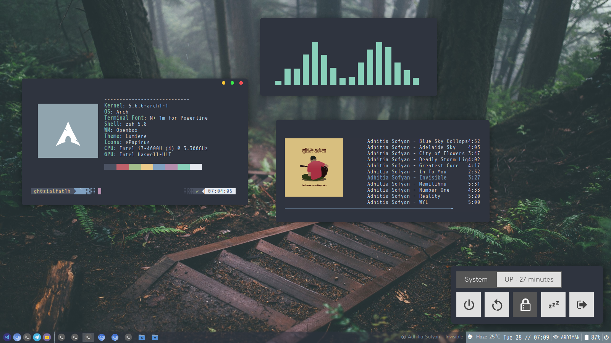

ArchLinux is a linux distribution for computers. The ArchLinux
repositories contains both free and nonfree software.
ArchLinux adheres to five principles: simplicity, modernity, pragmatism,
user centrality and versatily.
A package manager written specifically for Arch Linux, Pacman, is used to install, remove and update software packages. Also ArchLinux is a rolling-disto, that means there are no major releases of completely new version of the system but a regular system update is all you need to get the latest Arch Software.
Popular arch based distros [go]The strong point of an arch installation is customizability because after an arch fresh installation you have nothing except for the os and the base packages. You have to install all drivers, desktop environment, window manager, applications etc.
Here is a link to a reddit community where people upload their custom desktop and themes.
Last feature of ArchLinux is a well writed and complete documentation called ArchWiki. This is a link for the archwiki:
ArchWiki| Name | Written in | Description |
|---|---|---|
| i3 | C | One of the most popular wm |
| QTile | Python | A full-featured, hackable tiling window manager written and configured in Python |
| Awesome | Lua | One of the most customizable windows manager, its popular and has a pretty good documentation |
| Name | Image |
|---|---|
| Manjaro | |
| Endeavour Os | |
| Arch Linux |
|